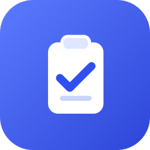

Group Checkan
Anwesenheit abhaken – schnell, übersichtlich und offline.(nur für Android 7.0 oder neuer)
Hier downloadenNach dem Download die Datei öffnen und die Installation bestätigen (eventuell musst du „Installation aus unbekannten Quellen“ erlauben). Updates einfach über die bisherige Version installieren – deine Daten bleiben erhalten.
Was ist neu in 3.0?
Group Checkan ist umgezogen: Downloads und Updates kommen ab jetzt aus einem eigenen, aufgeräumten Repository. Für dich ändert sich fast nichts.
✨ Neu
Neuer Ort für Downloads und Updates
- Die App sucht Updates ab jetzt nur noch bei arthurtschik/Group_Checkan. Dort gibt es nur noch die Download-Seite und die Releases.
- Die Download-Seite bleibt unter derselben Adresse erreichbar.
- Updates werden weiterhin vor der Installation geprüft (Paketname, Signatur, Versionsnummer).
Wichtig: Bitte dieses Update installieren. Ältere Versionen finden künftige Updates nicht mehr von selbst.
Sonstiges
- „Über die App“ verweist jetzt auf Downloads, Versionen und Infos.